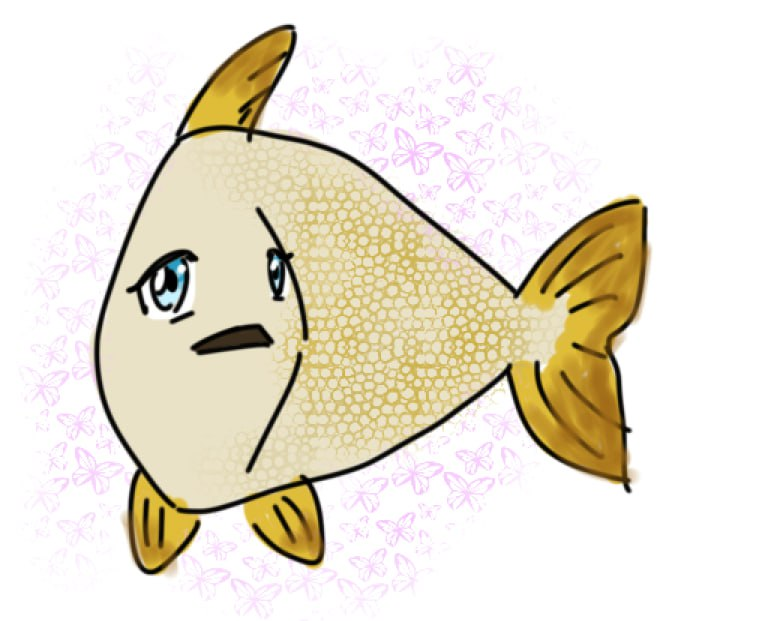

최정례
안녕
멀리서
천둥같은게
소리는들리지않고
그런게
풀잎같은게
갑자기돋아나
깊은겨울이라서
그럴리가없는데도
어린게
길가에새파랗게
흔들리고있었다
곁에있던네가
아득하게멀어지면서
낮은처마들이
손들어
경례를붙이고
안녕
잠의 들판으로
잠의 들판으로
잠의 병사들이 작은 창과
방패를 쥐고몰려오고
물러나고
눈꺼풀 안에서 자욱하게
펼쳐지는 잠의 들판
치고받고치고받고치고받고
먼지처럼 피어오른다
어디서 왔는가? 넌
어디서? 나도 몰라 손을
잡고 구름이 되자 뭉쳐서
사라지자
그러자그러자그러자
잠의 구름 떼
느닷없이 훅 코에서 빠져나온
숨소리에 몸이 흔들리고
잠의 들판은 깨어지고 병사들은
어디론가 사라지고 찢어진 잠의
거미줄
다시 잠의 들판으로
미끄러져 들어가려고
부른다
거미줄거미줄거미줄
언젠가는 영원히 나를
잡아갈 잠의 병사들을
김영랑
돌담에 속삭이는 햇발
돌담에 속삭이는 햇발같이
풀 아래 웃음 짓는 샘물같이
내 마음 고요히 고운 봄 길 위에
오늘 하루 하늘을 우러르고 싶다
새악시 볼에 떠오는 부끄럼같이
시의 가슴에 살포시 젖는 물결같이
보드레한 에메랄드 얇게 흐르는
실비단 하늘을 바라보고 싶다
모란이 피기까지는
모란이 피기까지는,
나는 아직 나의 봄을 기다리고 있을 테요.
모란이 뚝뚝 떨어져 버린 날
나는 비로소 봄을 여읜 설움에 잠길 테요.
오월 어느 날, 그 하루 무덥던 날,
떨어져 누운 꽃잎마저 시들어 버리고는
천지에 모란은 자취도 없어지고,
뼏쳐 오르던 내 보람 서운케 무너졌는니
모란이 지고 말면 그뿐, 내 한 해는 다 가고 말아,
삼백 예순 날 하냥 섭섭해 우옵내다.
모란이 피기까지는,
나는 아직 기다리고 있을 테요, 찬란한 슬픔의 봄을,
이장희
봄은 고양이로다
꽃가루와 같이 부드러운 고양이의 털에
고운 봄의 香氣(향기)가 어리우도다.
금방울과 같이 호동그란 고양이의 눈에
미친 봄의 불길이 흐르도다
고요히 다물은 고양이의 입술에
포근한 봄 졸음이 떠돌아라
날카롭게 쭉 뻗은 고양이의 수염에
푸른 봄의 生氣(생기)가 뛰놀아라.
불놀이
불놀이를
시름없이 즐기다가
아불사! 부르짖을 때
벌써 내 손가락은 발갛게 되었더라
봄날
비 오는 봄날
파랗게 여원 손가락을
고요히 바라보고
남모르는 한숨을 짓는다
